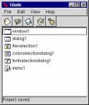
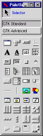
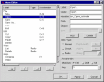
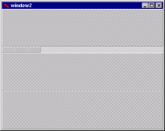
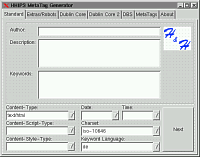

This page gives an overview of how Glade is used to build user interfaces. It includes screenshots of the main Glade windows and also of a couple of applications built with Glade. (Click on the thumbnail images to get full-size screenshots).
This is the main Glade window. It lists all of the windows and dialogs making
up your project. Double-clicking on an item in the list shows the corresponding
window or dialog.
Menu and toolbar commands enable you to create new projects, load and save
them, and build the source code.

The second most important window in Glade is the widget palette.
It shows icons representing all of the widgets which are available.
To add new windows and dialogs to your project, simply select the icon in the
palette.
To add widgets to a window or dialog, select the widget in the palette, then
click on the position you want to add it.
The last major Glade window is the property editor.
This allows you to alter the properties of widgets, such as the widget
size or the label text.
The signals page also allows you to add signal handlers to widgets, so
you can, for example, specify the function to be called when a button is
clicked.

If you add a menu bar to your application, you can use this dialog to add
the menus and set accelerator keys and signal handlers.
With a bit of practice, it is possible to create complex menu structures in
a few minutes.
Building an Interface

Creating interfaces with GTK+ is slightly different to other widget sets.
Instead of using fixed positions and sizes for every widget, GTK+ uses
containers such as horizontal and vertical boxes and tables to arrange the
widgets. This makes it much easier to support resizing of windows, and also
helps when interfaces are translated into different languages. However, it
does make it slightly more difficult to create the interface.
The window on the left shows the first step in creating a simple text editor
application. The window has been divided vertically into four rows, using
a GtkVBox widget. A GtkToolbar widget with three items has been added to the
second row.
Now we've added a GtkMenuBar and GtkStatusbar to the top and bottom rows,
and a GtkText widget in the 3rd row for editing the text.
We've also added three buttons to the toolbar for creating, opening, saving files.
That's it! The complete window can be created in a few minutes, including
a menu bar with accelerator keys.
The complete application can be found in the examples directory of the Glade
distribution.
A Final Example
Finally, here is another example user interface created by a Glade user. The interface was almost complete in about four hours, without any previous experience of using Glade or the GTK+ toolkit.
Enjoy using Glade !